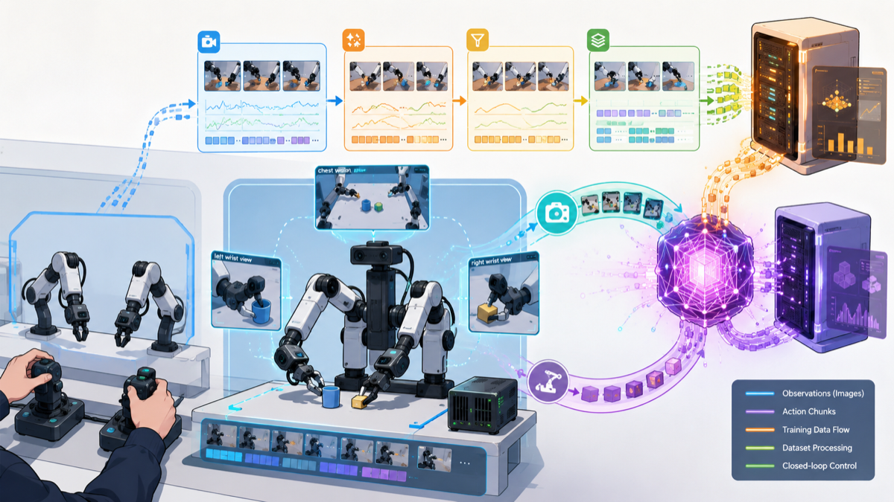

About Me
Hello everyone, I am Zhang Jinquan, a master's student in Artificial Intelligence at Shenzhen University and a member of the World Model Group at the Guangdong Laboratory of Artificial Intelligence and Digital Economy (Shenzhen). Our group works under the leadership of Tian Qi, Chief Scientist of Huawei Terminal BG. Before that, I received my bachelor's degree from Jiangsu University. My master's research focuses on robot learning, especially the robustness of VLA / WAM models in the real physical world.
My current research interests include post-training for VLA / WAM models and robustness in real physical environments. Multiple papers of mine have been accepted by the top international robotics conference IROS and the journal AHSWN, and I have filed multiple invention patents.
I am currently interning at Roboscience, where I mainly work on fine-tuning and post-training VLA / WAM models. My work aims to ensure that these models perform well in simulation while maintaining robustness in the physical world. I also participate in evaluating VLA robots in large real-world shopping-mall and supermarket shelf scenarios.
📢📢 I hope to join a dynamic and goal-driven robotics team. If you are interested, please email me at 2410815010@mails.szu.edu.cn.
News
- 2026: Our paper Structure-Aware Robust Fine-Tuning: Defending Vision-Language-Action Robots Against Physical Attention Hijacking was accepted by IROS 2026.
- 2026.06: Released Aloha Pi0.5 LeRobot, a real-robot learning pipeline for teleoperation, LeRobot datasets, Pi0.5 training, and remote inference.
- 2026: Continuing master's research at Shenzhen University in Shenzhen, China.
Selected Publications
Robot Learning and VLA Robustness

Structure-Aware Robust Fine-Tuning: Defending Vision-Language-Action Robots Against Physical Attention Hijacking
jqz (Zhang Jinquan) et al.
- Identifies policy-critical action-to-vision attention hijacking, where physical adversarial patches divert action-conditioned attention away from task-relevant regions.
- Proposes AGSD, an EOT-optimized printable patch that jointly hijacks policy-critical attention and disrupts vision-language semantic alignment.
- Introduces SARF, a zero-inference-overhead defense that fine-tunes only the visual encoder using feature anchoring, attention correction, and language-guided geometric consistency.
- Reduces OpenVLA failure under AGSD from 100% to 17.0-56.8% on LIBERO and improves real PiPER success from 9.7% to 61.7%.
Selected Projects
Real-Robot Learning Systems

Aloha Pi0.5 LeRobot: A Real-Robot Learning Pipeline
jqz (Zhang Jinquan)
- Builds an end-to-end pipeline for AlohaMini teleoperation, LeRobot-format datasets, dataset cleaning, Pi0.5 training, and 4090-to-Orin remote inference.
- Separates real-time robot IO and safety on Orin from heavy VLA policy inference on a remote GPU server.
- Provides public engineering documentation for reproducible real-robot learning without exposing private datasets, paths, IPs, or hardware identifiers.
Research Interests
- Robot Learning: data-driven manipulation, real-robot systems, and closed-loop deployment.
- VLA: Vision-Language-Action policies for general robotic manipulation.
- WAM: World Action Models for action-aware embodied prediction and planning.
- Post-Training: adapting pretrained robot policies for downstream tasks and robustness.
- Fine-Tuning: structure-aware and parameter-efficient adaptation for embodied models.
Experiences
- 2026 - Now, M.S. Student, Shenzhen University, Shenzhen, China.
- 2026, IROS 2026 accepted paper on robust fine-tuning for VLA robots.
- 2026, Aloha Pi0.5 LeRobot open-source real-robot learning project.
Contact
- Email: 2410815010 [at] mails.szu.edu.cn
- GitHub: https://github.com/jjjjqqqz101
- Homepage: https://jjjjqqqz101.github.io/